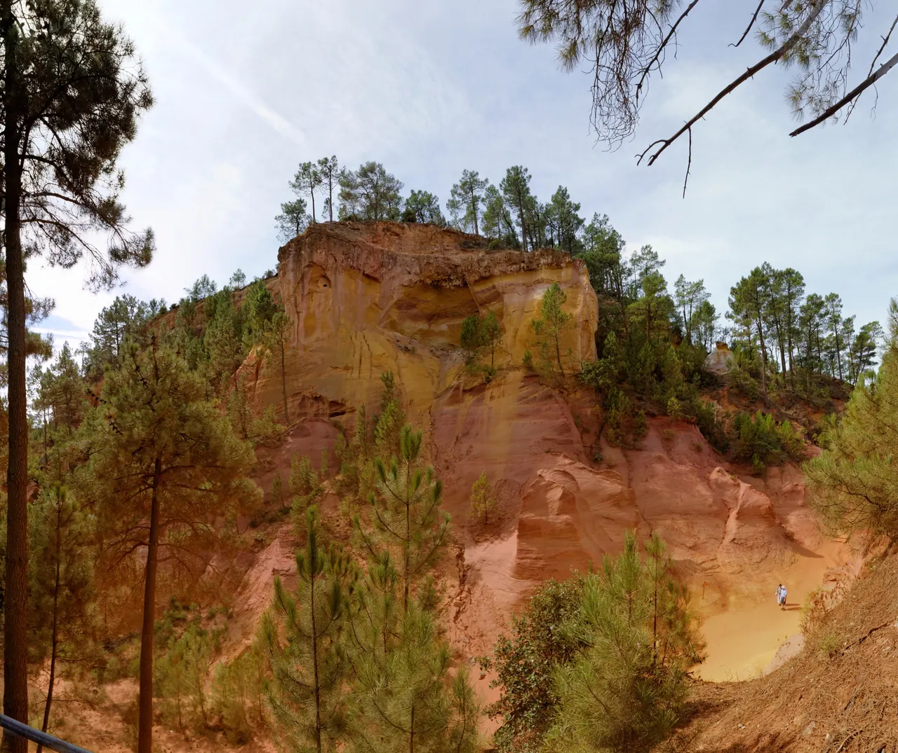

{kind=link}

Abbaye de Sénanque
1148년 깊은 협곡 속에 세워진 12세기 시토회(Cistercian) 로마네스크 수도원. 일체의 장식을 배제한 절대적 청빈의 중세 석조 건축과 현재도 이어지는 수도사들의 침묵 기도.

백색 석회암으로 둘러싸인 전형적인 프로방스 마을들과 달리, 선명한 주황색, 핏빛 붉은색, 황금빛 노란색으로 빛나는 거대한 천연 황토(Ochre) 암반 위에 세워진 마을이다.
18세기 말 장에티엔 아스티에(Jean-Étienne Astier)가 오커에서 천연 염료를 추출하는 공정을 발명한 이후, 20세기 초까지 세계 최대의 오커 채굴지로 번성했다.
채굴이 중단된 옛 야외 채석장은 자연과 세월이 빚어낸 '오커 트레일(Le Sentier des Ocres)'이라는 환상적인 산책로로 재탄생했으며, 지중해 소나무 숲과 기괴하게 깎인 붉은 사암 절벽이 마치 지구 밖 외계 행성을 걷는 듯한 강렬한 시각적 충격을 선사한다.
"뤼베롱에서 단 하나의 자연 지형 경관을 꼽는다면 단연 루시용의 오커 트레일이다." 붉은 먼지를 뒤집어써도 되는 편한 신발을 신고 50분 순환 산책로를 걸으며 17가지 천연 황토 색조의 웅장한 침식 절벽을 감상한 뒤, 마을 정상의 벨베데레 전망대에서 파스텔톤 가옥과 뤼베롱 계곡을 내려다보는 2시간 여정이 완벽한 감동을 준다.
| 운영시간 | 9/1–9/30 09:00–19:00 · 최종입장 30분 전 |
|---|---|
| 휴무 | 9월은 매일 개방(주간 휴무 없음). 12/25·1/1 휴장, 1~2월 일부 휴장일. 단, 화재위험 도지사령·폭우·뇌우 시 임시 폐쇄 — 전날 18시에 공지 |
| 요금 | 성인 €8 · 12–17세 €4 · 12세 미만 무료 |
| 예약 | 예약 불가·불필요 — 당일 현장 매표소에서만 구매(개인 3.5유로). 9월 09:30 개방·최종입장 18:30·폐장 19:00 |
| 항목 | 상세 정보 |
|---|---|
| 위치 | Place de la Poste, 84220 Roussillon |
| 오커 트레일 운영 | 2월 중순–12월 매일 09:00–18:30 (하절기 19:30까지) / 입장 마감 45분 전 |
| 입장료 | 성인 €3.50, 10세 미만 무료 (현장 매표소 또는 키오스크 발권, 예약 불필요) |
| 복장/신발 주의 (필수) | 절대 흰옷이나 흰색 신발 착용 금지! 미세한 붉은 오커 흙먼지가 신발과 바짓단에 묻어 얼룩이 남음. 편안한 짙은 색 운동화 권장. 차내에 여벌 신발이나 물티슈 준비 권장 |
| 보행 제한 | 트레일 입구에 약 350개의 계단이 있어 유모차 및 휠체어 진입 불가 |
| 추천 주차장 | Parking des Ocres (트레일 입구 직결, 유료 일일권 약 €4) 또는 Parking Saint-Joseph (마을 중심 접근) |
| 마을 시장 | 매주 목요일 오전 (08:30–12:30): 광장에서 지역 농산물 및 특산품 시장 개장 |
1148년 깊은 협곡 속에 세워진 12세기 시토회(Cistercian) 로마네스크 수도원. 일체의 장식을 배제한 절대적 청빈의 중세 석조 건축과 현재도 이어지는 수도사들의 침묵 기도.

뤼베롱 산맥 북사면에 층층이 솟아오른 가장 낙차가 큰 계단식 언덕 마을. 해발 425m 옛 성당(Vieille Église) 정상 테라스에서 맞은편 라코스트(Lacoste) 성채와 계곡 전체를 굽어보는 압도적 파노라마.

뤼베롱 현지 농부들이 직접 재배하고 만든 신선 농산물과 특산품만 판매하는 프랑스 공인 정통 생산자 직거래 일요 시장(Marché Paysan). 뤼베롱 농가 체류의 최고의 식재료 보급 거점.

보클뤼즈 고원 가장자리 백색 석회암 절벽 위에 층층이 솟아오른 뤼베롱 최고의 요새 마을. 마을 진입로에서 마주하는 압도적인 파노라마 전경과 11세기 중세 르네상스 성채.

대형 관광버스가 닿지 않아 뤼베롱에서 가장 고요하고 평화로운 '숨겨진 보석' 마을. 언덕 정상의 17세기 예루살렘 풍차(Moulin de Jérusalem)와 현지인들의 정겨운 일상이 살아있는 골목길.

알베르 카뮈가 영면한 뤼베롱 남부의 평탄하고 세련된 예술 마을. 프로방스 최초의 르네상스 성(Château de Lourmarin), 플라타너스 그늘 아래 카페 테라스, 로즈마리에 덮인 소박한 카뮈의 묘소.